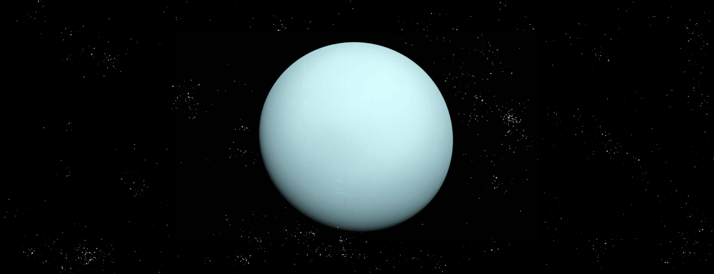
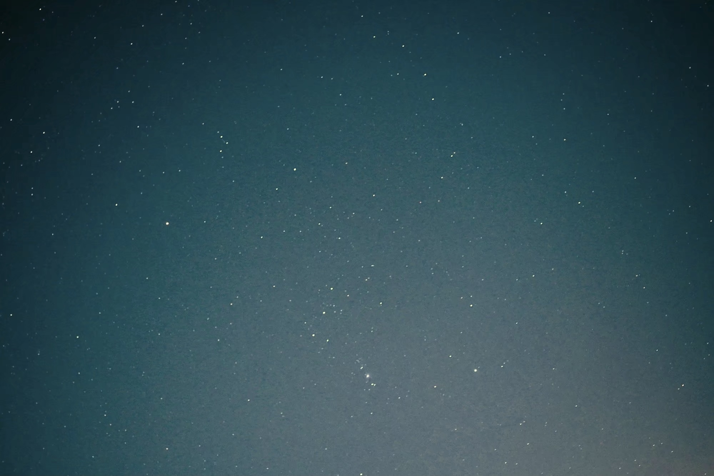

跟随着我们，很快就到达了第九站--天王星。

天王星｜URANUS
跟随着我们，很快就到达了第九站--天王星。
它是太阳系中唯一躺着运转的行星。天王星绕行太阳则需要约84年才能绕完一圈。
天王星是第一颗使用望远镜发现的行星。
天王星的天文学符号综合了火星和太阳符号，因为天王星是希腊神话的天空之神，被认为是由太阳和火星联合的力量所控制。
天王星的 3D 模型，太阳系最冷的行星。
用鼠标拖动试试
Source: NASA Visualization Technology Applications and Development (VTAD)

质量 ：8.681✕1025 kg（±0.0013）
直径 ：50724 km
与太阳的平均距离：大约30亿公里
公转周期：84个地球年